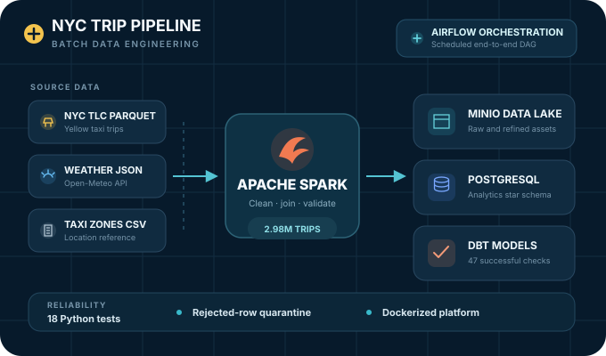

Data Engineering
NYC Transportation Data Platform
An end-to-end batch platform that turns nearly three million NYC taxi trips, weather observations, and zone data into tested analytics tables.
Platform Highlights
Processed 2,979,183 source trips with Apache Spark
Built a PostgreSQL star schema for trip, location, payment, date, and weather analysis
Validated the pipeline with 18 Python tests and 47 successful dbt checks
PythonApache Spark
Airflowdbt
PostgreSQLMinIO
Docker